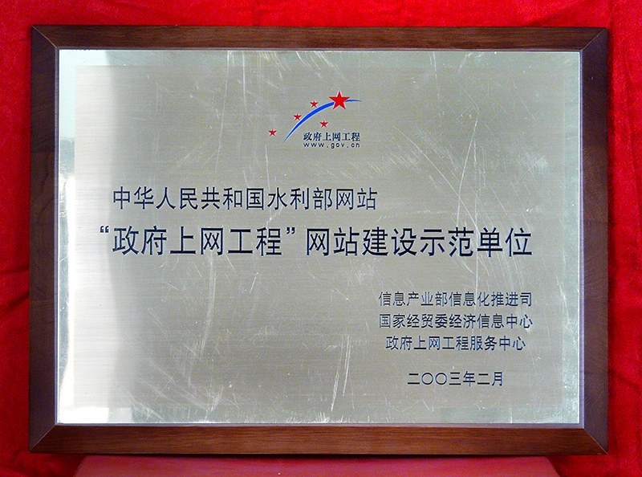
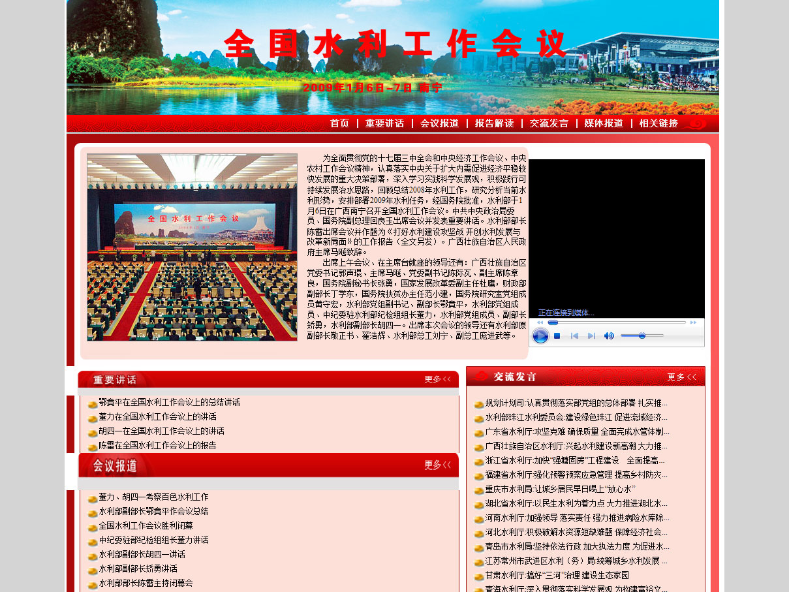
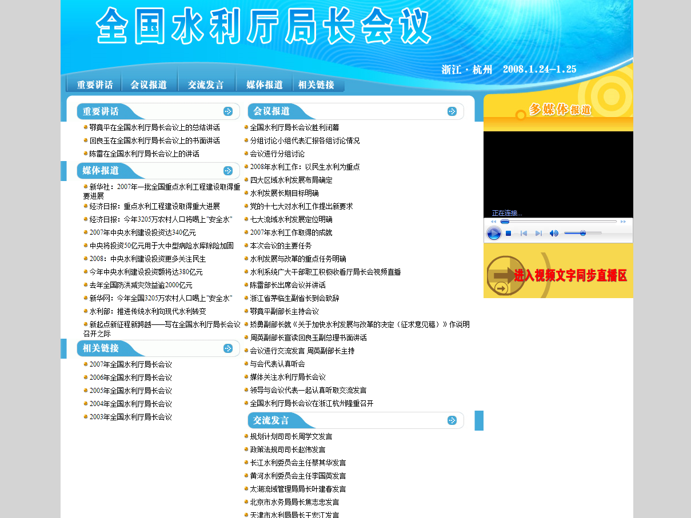

- 1999年网站开通

-
2019年11月，网上答题栏目获得2019·政府网站政民互动类精品栏目称号。
-
2019年11月，公众咨询栏目获得2019·政府网站政民互动类精品栏目称号。
-
2019年1月，获得搜索正能量点赞2018数字中国政务搜索服务能力优秀榜奖。
-
2018年12月12日，获得第十七届中国政府网站绩效评估优秀案例奖。
-
2017年11月，获得2017年国务院组成部门网站绩效评估第三名。
-
2017年3月，获得2016年度中国最具影响力党务政务网站称号。

2015年11月27日，获得2015中国“互联网+政务”优秀实践案例50强荣誉称号。
-
2014年11月，在2014中国政府网站绩效评估活动中荣获政府透明度领先奖。
-
2013年12月，在2013中国政府网站绩效评估活动中获得政府透明度领先奖。
-
2013年3月，获得2012年最具影响力政务网站称号。
-
2012年3月，在2011年度中国优秀政府网站推荐及综合影响力评估活动中荣获2011年度中国政府网站优秀奖。
-
2011年3月，获得2010年中国互联网最具影响力政府网站称号。
-
2008年获得品牌栏目奖。
-
2007年获得信息公开特色与创新奖。
-
2005年被授予中国优秀政府门户网站称号。
-
2004年获得2004中国优秀政府门户网站称号。
- 
2003年被授予政府上网工程网站建设示范单位称号。
-
2018年全国水土流失动态监测成果新闻发布会
-
全面建立湖长制新闻通气会
-
当前防汛抗洪工作情况新闻发布会
-
全面建立河长制新闻发布会

全面推行河长制工作进展情况新闻发布会
-
2016年水利建设情况新闻发布会
-
《水利改革发展“十三五”规划》新闻发布会
-
当前防汛抗洪工作情况新闻发布会
-
大江大河流域环境治理措施成效新闻通气会
-
最严格水资源管理制度落实情况新闻通气会
-
《太湖流域管理条例》颁布实施新闻发布会
-
全国水文工作会议
-
全国水利信息化工作会议专题
-
世界水日中国水周新闻发布会
- 
全国水利工作会议
- 
全国水利厅局长会议
-
全国水利信息化技术与建设成果交流展示会
-
全国水利信息化工作会议
-
1999年
-
- 2000年网站第一次改版
2000年
-
- 2004年网站第二次改版
2004年
-

- 2006年网站第三次改版
2006年
-

- 2009年网站第四次改版
2009年
-

- 2017年网站第五次改版至今
2017年


- 张三：中国是水资源紧缺的国家。非常规水源是常规水源的重要补充，对于缓解水资源供需矛盾，提高区域水资源配置效率和利用效益等方面具有重要作用。
- 李四：中国是水资源紧缺的国家。非常规水源是常规水源的重要补充，对于缓解水资源供需矛盾，提高区域水资源配置效率和利用效益等方面具有重要作用。
- 王五：中国是水资源紧缺的国家。非常规水源是常规水源的重要补充，对于缓解水资源供需矛盾，提高区域水资源配置效率和利用效益等方面具有重要作用。
- 赵六：中国是水资源紧缺的国家。非常规水源是常规水源的重要补充，对于缓解水资源供需矛盾，提高区域水资源配置效率和利用效益等方面具有重要作用。
- 田七七：中国是水资源紧缺的国家。非常规水源是常规水源的重要补充，对于缓解水资源供需矛盾，提高区域水资源配置效率和利用效益等方面具有重要作用。
|
 京公网安备11040102700040号
京公网安备11040102700040号